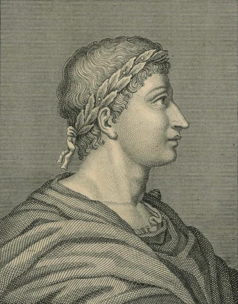

Ovidius Naso
(43. – 18. př. n. l.)

- římský básník, psal lehce a plynule
- studoval v Římě právo a rétorika
- po studiích odjel do Řecka a brzy se věnoval pouze literatuře
- skončil ve vyhnanství
- čtivé a populární básně
Listy heroin (česky 1971)
- fiktivní dopisy, které píší ženy svým manželům a milencům
- knihy, ve kterých jsou rady mládeži, jak získat a udržet lásku
- jedinečné dílo, ojedinělé v této formě
- milostná poezie
- 15 knih
- 250 řeckých a římských bájů
- proměna živé bytosti v neživou a naopak